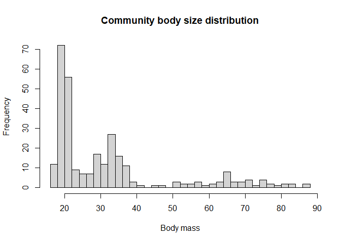

Package functionality and limitations
birdsize simulates body mass (in g) measurements for birds. Because avian monitoring methodologies often rely on auditory or visual cues, datasets on bird populations and communities often lack measurements of body mass for individuals. Without information on individuals’ body size, it is challenging to conduct large-scale analyses of trends in biomass, energy use, community body size structure, or other, similar patterns for these species. birdsize addresses this need by using species’ traits to generate size estimates for birds based on species identity or user-specified parameters.
Specifically, birdsize assumes that body mass is normally distributed within a species, with a species-specific mean and standard deviation. birdsize uses species-level parameters (mean and standard deviation) to make estimates of individual-level body mass by drawing from the corresponding normal distributions. Because of the (very) broad nature of these assumptions, birdsize should probably not be used to generate fine-scale estimates of body mass. Rather, the estimates generated through birdsize are suitable for broad-scale macroecological studies, or for scenario exploration (via tweaking parameters), which would otherwise be impossible given the logistical constraints on collecting individual body mass measurements at massive scale.
birdsize contains built-in species-level parameters for 450 species (mostly those found in North America north of Mexico). It is also designed to take user-provided parameters to generate body size estimates for species not included in the built-in data, or indeed for hypothetical or simulated species. birdsize can generate estimates for populations (one or many individuals, all of the same species) or communities (multiple populations of different species, or of the same species at different locations or points in time).
birdsize and the Breeding Bird Survey
birdsize was originally developed to be applied to the North American Breeding Bird Survey (BBS). In brief, the North American Breeding Bird Survey is a community science program run by the USGS for more than 60 years. Each year, during the avian breeding season, volunteer surveyors conduct auditory point-counts of all the birds observed along 50-km routes. There are nearly 3,000 such routes distributed across the United States and Canada, making the BBS an invaluable dataset on avian populations and community structure over time and over large geographic extents. For more detail on the BBS, and to access the BBS data, see the Breeding Bird Survey website and repository on ScienceBase.
To facilitate applications to the BBS, birdsize contains built-in species parameters for 450 species found in the BBS from 1980 until present, and contains built-in “demo” datasets that mimic the structure of the BBS data. The bbs-data vignette illustrates how to use birdsize to generate estimates of biomass and energy use for a route from the Breeding Bird Survey.
Note, however, that birdsize does not contain any actual data from the Breeding Bird Survey. There are multiple interfaces for connecting to the BBS data releases (e.g. the R Data Retriever, ScienceBase) and, wherever possible, users are encouraged to go directly to the source to access the most up-to-date data.
Estimating body masses for a population
The core functionality of birdsize is to simulate individual body mass measurements for birds given either their species ID or a mean (and possibly standard deviation) of body mass, by drawing individuals from a normal distribution. At minimum, this requires a population size (abundance) and either the species’ mean body size, or the species’ identifier (scientific name, or AOU numeric code for species found in the BBS). If the standard deviation of body mass is not provided, birdsize will estimate it based on a scaling relationship between the mean and standard deviation of body mass.
The key function for this is pop_generate.
Here, we generate body mass estimates for a population of a hypothetical species with a mean body size of 10g:
set.seed(13)
first_population <- pop_generate(abundance = 100,
mean_size = 10)
hist(first_population$individual_mass,
main = "First population masses",
xlab = "Body mass (g)")
Alternatively, for a species known to birdsize, we can simply provide the scientific name or AOU code. Here, Melanerpes carolinus is the red-headed woodpecker:
woodpecker_population <- pop_generate(abundance = 100,
scientific_name = "Melanerpes carolinus")
hist(first_population$individual_mass,
main = "M. carolinus population masses",
xlab = "Body mass (g)")
Estimating body masses for a whole community
To generate body size estimates for a whole community, we use the community_generate function. community_generate takes population sizes and species identifiers or parameters for multiple species, and simulates populations for each species.
We can create estimates for a hypothetical community by providing population sizes and scientific names:
first_community <- data.frame(
abundance = c(50, 100, 150),
scientific_name = c("Melanerpes carolinus", "Myiarchus crinitus", "Sayornis phoebe")
)
first_community_sims <- community_generate(first_community, abundance_column_name = "abundance")
hist(first_community_sims$individual_mass, main = "Community body size distribution", xlab = "Body mass", breaks = 50)
Citation
Diaz, Renata M. (2023). birdsize: Estimate Avian Body Size Distributions. GitHub. https://github.com/diazrenata/birdsize